Open Webslides
Sprint 4
Open Webslides
Sprint 4
Overview
4 sprints completed
2 sprints remaining
Internship goal: working platform, basic editor
Finished
API coupling, demo instance
http://owsdev.ugent.be/
Delete topic: confirmation modal
Platform branding
Authentication: sign in, sign up
Slow editor development
Homepage
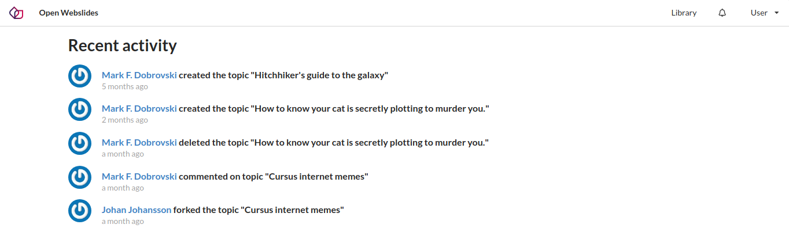 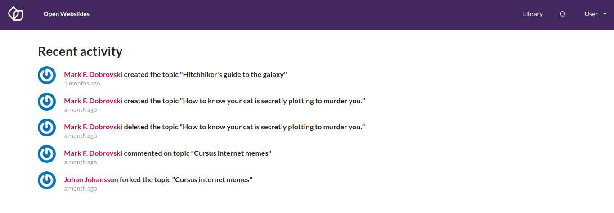
Library
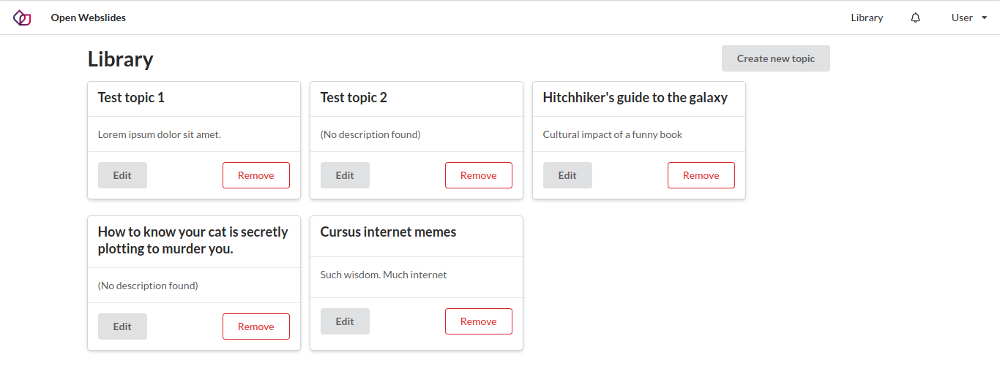 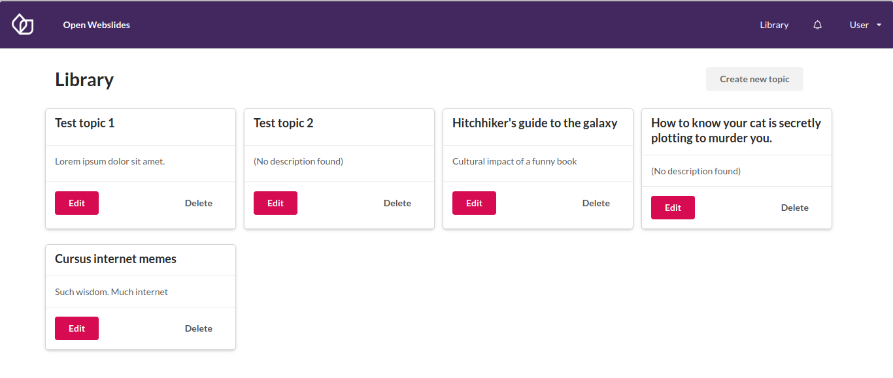
Sign in
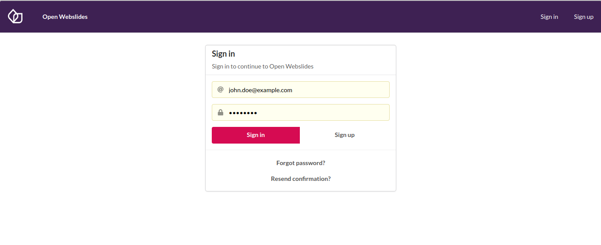
Profile
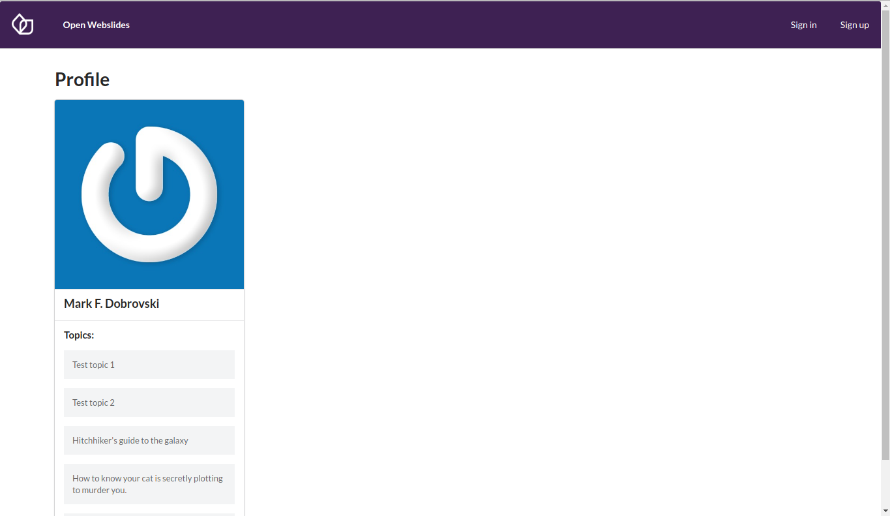
Possible style changes
Feed: feed-items
Library: secondary button style
Feed
Feed 1: extra margin
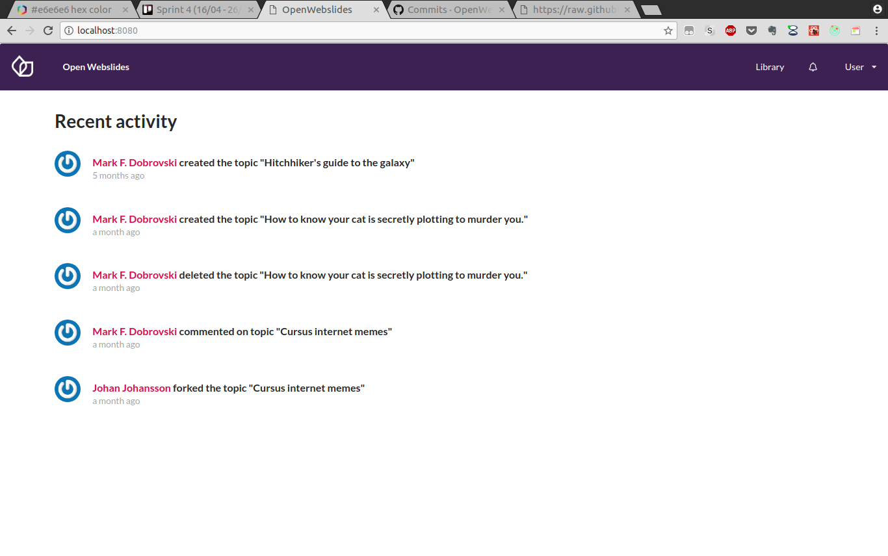
Feed 2: card
Feed 3: rounded cards
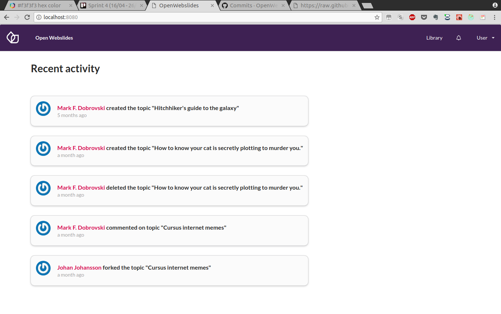
Feed 4: background colour
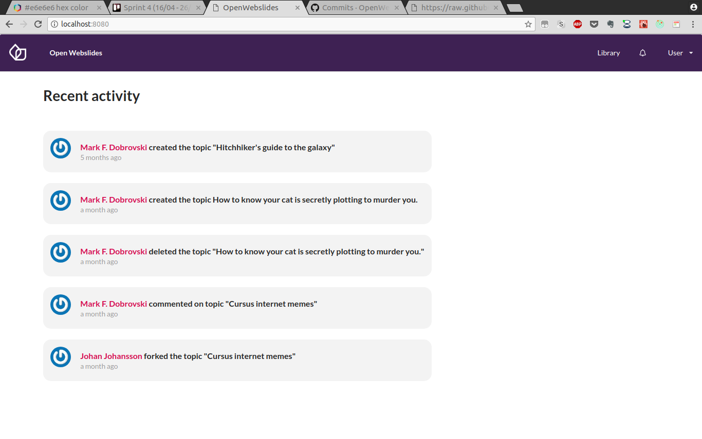
Feed 5: link colour
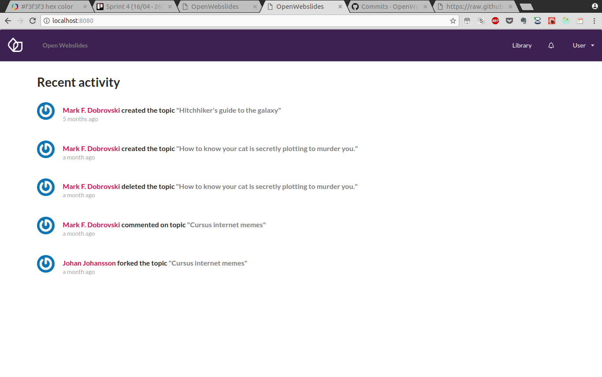
Library
Library 1: link underline
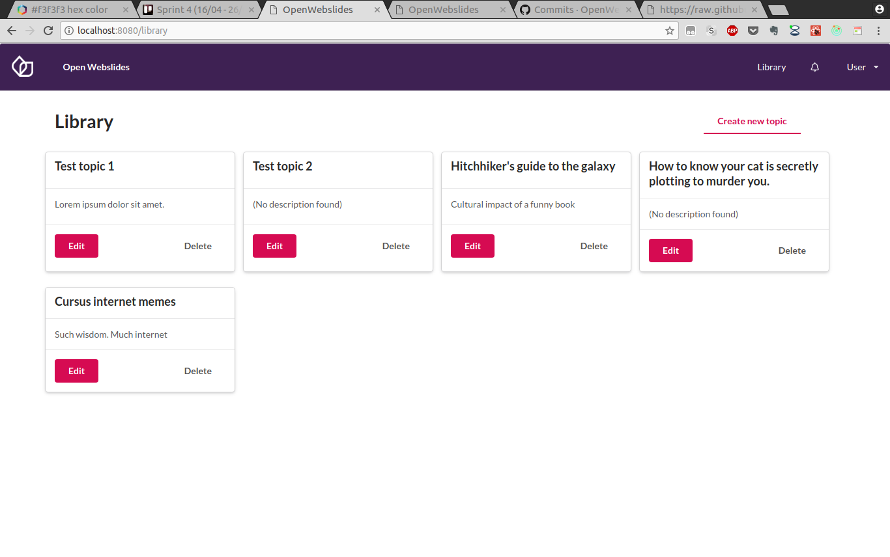
Library 2: button
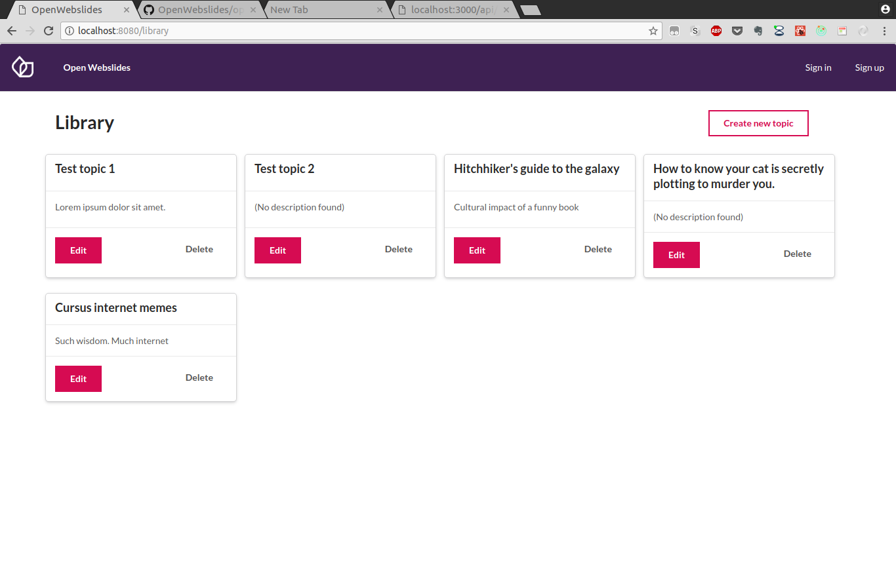
Sprint 5
Persistence of topics
Functional editor